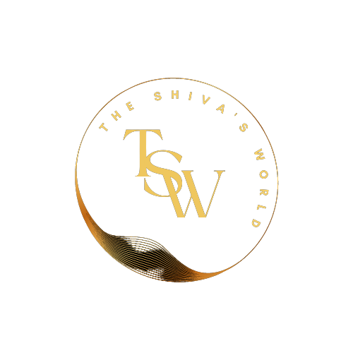

ITS TIME TO TAKE A ROUND OF THE ONE LIFE, MULTIPLE TYPES OF LIFESTYLE LIVING.
THE SHIV'S World
UPSC EXAM PREPARATION ROADMAP
Start
Initial Assessment: Assess your current knowledge, strengths, and weaknesses.
Understanding the UPSC Exam.
Exam Structure: Understand the three stages - Prelims, Mains, and Interview.
Syllabus: Familiarize yourself with the extensive UPSC syllabus.
Create a Study Plan.
Timetable: Establish a realistic study schedule.
Long-term Goals: Define your objectives and targets.
Short-term Goals: Break your study plan into manageable segments.
Resources and Materials
Textbooks: Select recommended UPSC preparation books.
Online Resources: Utilize websites, blogs, and forums.
Coaching: Consider enrolling in a coaching institute if necessary.
Prelims Preparation
General Studies (GS): Cover topics such as History, Geography, Polity, Economy, Science, and Current Affairs.
CSAT (Civil Services Aptitude Test): Focus on aptitude and reasoning skills.
Mains Preparation
Optional Subject: Choose an optional subject and study it in-depth.
General Studies (GS): Go deeper into GS topics, including essay writing.
Previous Year Question Papers: Practice solving past papers.
Answer Writing Practice
Essay Writing: Develop essay writing skills.
Mains Paper Practice: Practice answer writing for Mains papers.
Current Affairs
Daily Reading: Stay updated with current affairs through newspapers and magazines.
Current Affairs Notes: Maintain a current affairs diary.
Mock Tests and Revision
Prelims Mock Tests: Take regular mock tests.
Mains Answer Writing Practice: Write and review model answers.
Revision: Regularly revise what you've learned.
Interview Preparation
Personality Development: Enhance your communication and soft skills.
Mock Interviews: Participate in mock interview sessions.
Current Affairs Review: Stay updated on current events.
Stay Healthy and Manage Stress
Diet: Maintain a balanced diet.
Exercise: Incorporate physical activity into your routine.
Stress Management: Practice relaxation techniques.
Stay Motivated
Join a Study Group: Share experiences with fellow aspirants.
Positive Mindset: Stay positive and motivated.
Continuous Learning
Stay Updated: Adapt to changes in the UPSC exam pattern.
Feedback: Seek feedback from mentors and peers.
Exam Day
Stay Calm: Keep your composure on the day of the exam.
Time Management: Manage your time effectively.
Results and Feedback
Evaluate: Assess your performance in the exam.
Learn from Mistakes: Identify areas for improvement.
Post-Exam Strategies
Reassessment: Decide on your future endeavors.
Plan B: Consider alternative career paths if necessary.
Conclusion
Success: Achieve your goal of clearing the UPSC exam.
Resilience: Reflect on your journey and lessons learned.
Remember that UPSC exam preparation is a long and challenging process, and your roadmap should be adaptable to your unique circumstances and needs.
Stay persistent and focused on your goal.
Embracing the journey of preparing for the UPSC examination has been an invaluable experience. It's not just about aiming for success in the exam; it's about the transformative power of relentless dedication and continuous learning. Throughout this journey, you've not only acquired knowledge but also developed unwavering determination, discipline, and resilience. Remember, this process is not just about securing a prestigious position; it's about honing yourself into a better version of who you were yesterday. The lessons you've learned from the study life are not confined to the textbooks; they're life lessons that will serve you well beyond the examination room. Keep that fire burning within you, stay committed to your goals, and know that with every challenge you face, you're one step closer to achieving your dreams. Your journey is a testament to your strength and potential; now, let that motivation propel you forward toward your aspirations, knowing that you are capable of achieving greatness.
All The Best Keep Smiling...........
Keep Hard Working For Your Dreams...............!!
Managed by :- Shivnarayan Singh Shekhawat